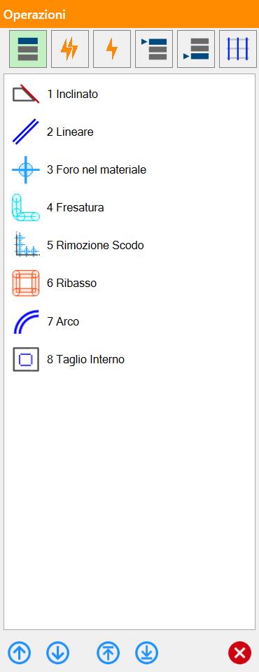
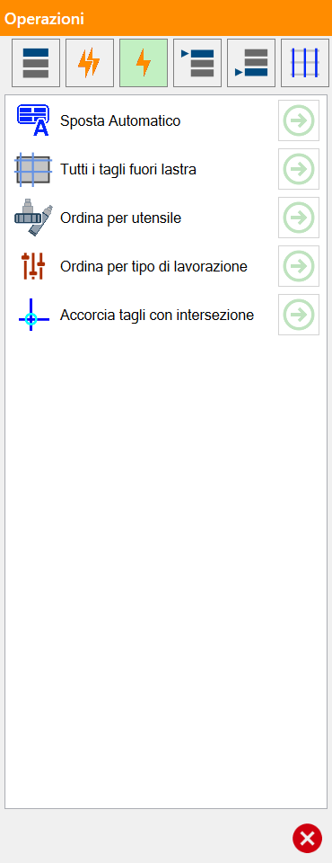
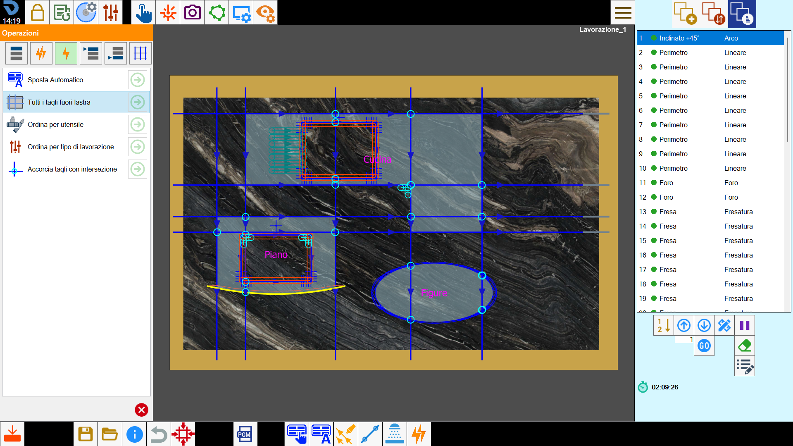
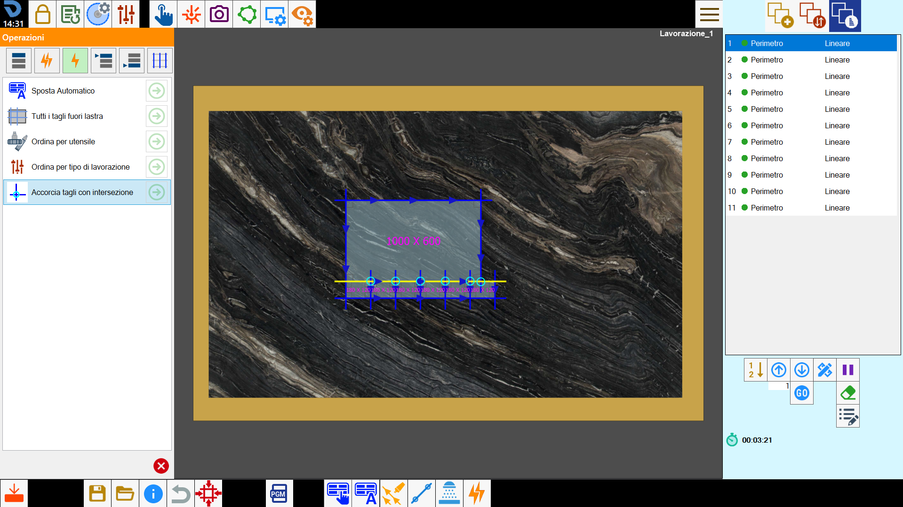

Questa funzione consente di applicare ordinamenti ed operazioni personalizzate ai tagli.

Operazioni disponibili
Ordinamento per lavorazione | |
Macro | |
Operazioni singole | |
Ordinamento lavorazioni in testa | |
 | Ordinamento lavorazioni in coda |
 | Ordinamento in base ai tagli |
Ordinamento esecuzione lavorazioni
Permette all’operatore di scegliere l’ordine di esecuzione dei tagli in base alla tipologia di lavorazione utilizzata.
L’elenco è composto dalle lavorazioni richieste per eseguire i tagli.
Cambiare l’ordine delle lavorazioni cambia anche l’ordine dei tagli della lista.

Le tipologie di lavorazioni mostrate all’interno di questo elenco sono riferite a quelle associate ai tagli presenti sull’area di lavoro.
In base a questo, possono venire mostrate voci diverse.
Barra inferiore
È possibile ordinare gli elementi della lista tramite alcuni pulsanti di spostamento.
 | Sposta |
 | Vai in cima/fondo |
Macro
È possibile definire e applicare delle macro. Ognuna di esse permette all’operatore di applicare avanzate opzioni di ordinamento sui tagli.
La selezione di una macro nella parte superiore del pannello permette all’operatore di visualizzare tutte le operazioni contenute nella macro stessa.

Le macro a disposizione dell’operatore possono essere gestite nei parametri dell’utente.
In base a questo, possono venire mostrate voci diverse.
Pulsanti
Applica operazione |
Operazioni singole
Si possono applicare alcune operazioni premendo sulla freccia verde che si vede sulla destra di ogni voce dell’elenco.

Operazioni singole disponibili
 | Sposta automatico |
 | Tutti i tagli fuori lastra |
 | Ordina per utensile |
 | Ordina per tipo di lavorazione |
Accorcia tagli con intersezione |
Tutti i tagli fuori lastra
Di seguito viene fornito un esempio per la suddetta lavorazione, prima dell’applicazione della lavorazione:

E il risultato ottenuto in seguito all’applicazione:

Accorcia tagli con intersezione
Questa operazione permette all’operatore di accorciare i tagli che si intersecano fra loro per evitare di rovinare l’interno di un pezzo.
Nella seguente immagine di esempio ci sono 6 intersezioni tra i tagli dei pezzi riportate nell’area di lavoro con dei piccoli cerchi di colore azzurro:

L'applicazione di questa operazione comporta un accorciamento dei tagli tale da evitare eventuali intersezioni.

Operazioni singole disponibili (Opzionale)
È possibile impostare il la presenza di alcune operazioni singole in relazione a come sono impostati i seguenti optional.
Scarica pezzo
Con la funzionalità Scarica Pezzo abilitata, verranno messe a disposizione alcune singole operazioni specifiche:
 | Scarica Pezzi |
| Scarica tutti i pezzi con ripetizione |
| Scarica filigrana con ripetizione |
Doppio disco
Con la funzionalità Doppio disco abilitata, verranno messe a disposizione alcune singole operazioni specifiche:
Allunga per doppio disco | |
Verifica per doppio disco |
Ordinamento lavorazioni in testa
L’operatore può cambiare l’ordine di esecuzione delle lavorazioni e mettere al primo posto una delle lavorazioni che si vede su questa finestra.

Le tipologie di lavorazioni mostrate all’interno di questo elenco sono riferite a quelle associate ai tagli presenti sull’area di lavoro.
In base a questo, possono venire mostrate voci diverse.
Ordinamento lavorazioni in coda
L’operatore può cambiare l’ordine di esecuzione delle lavorazioni e mettere in fondo una delle lavorazioni che si vede su questa finestra.

Le tipologie di lavorazioni mostrate all’interno di questo elenco sono riferite a quelle associate ai tagli presenti sull’area di lavoro.
In base a questo, possono venire mostrate voci diverse.
Ordinamento in base ai tagli
Queste operazioni consentono di cambiare l’ordine dei tagli dell’elenco in base ad alcuni criteri che dipendono dalla loro disposizione sull’area di lavoro.

Operazioni ordinamento in base ai tagli
 | Prima i tagli in basso |
 | Prima i tagli in alto |
 | Prima i tagli a destra |
 | Prima i tagli a sinistra |
 | Prima i tagli orizzontali 0_ |
 | Prima i tagli verticali 90_ |
Prima i tagli con direzione | |
 | Esterno interno |
Interno esterno |